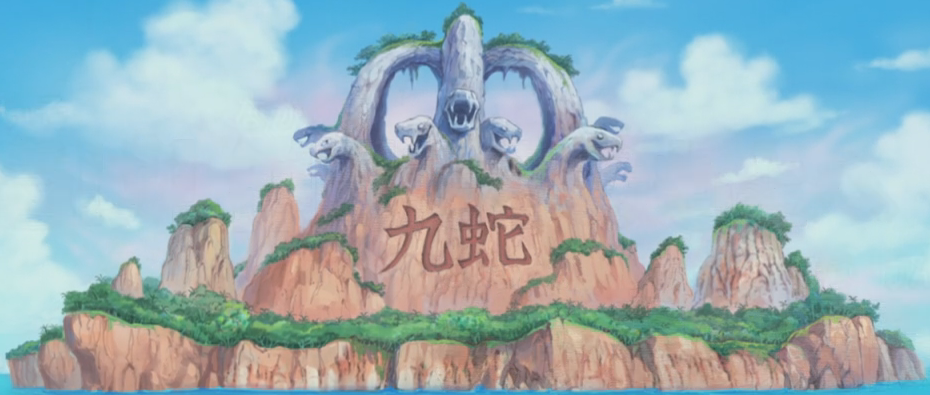

Luffy, un jeune garçon, rêve de devenir le Roi des Pirates en trouvant le One Piece, le trésor ultime rassemblé par Gol D. Roger,
le seul pirate à avoir jamais porté le titre de Roi des Pirates. Shanks le Roux, un pirate qui est hébergé par les villageois du village de Luffy,
est le modèle de Luffy depuis que le pirate a sauvé la vie du garçon. Un jour, Luffy mange un des fruits du démon, qui était détenu par l'équipage de Shanks,
ce qui fait de lui un homme-caoutchouc. À son départ, Shanks donne à Luffy son chapeau de paille.
Luffy ne doit lui rendre ce chapeau que lorsqu'il sera devenu un fier pirate sous peine de détruire cette promesse.
Dix ans plus tard, Luffy part de son village pour se constituer un équipage et trouver le One Piece. Pour échapper à la noyade,
il s'enferme dans un tonneau et se fait repêcher par un jeune garçon du nom de Kobby. Ce dernier rêve de devenir un soldat de la Marine,
mais par un coup du sort, s'est retrouvé enrôlé dans l'équipage de la terrible Lady Alvida. Ils rencontrent ensuite Roronoa Zoro,
un terrible chasseur de primes qui est détenu par la Marine.
Zoro accepte finalement de rejoindre l'équipage à condition que Luffy réussisse à trouver ses sabres qui sont détenus par le Colonel Morgan, le chef des marines de l'île.
Après un combat contre Morgan, Luffy réussit à reprendre les trois épées et part avec Zoro en laissant Kobby réaliser son rêve.
Arc Village d'Orange
Après que Luffy a été « enlevé » par un oiseau, Zoro rencontre trois pirates de Baggy le Clown qui disent s'être fait voler leur bateau par une fille.
Pendant ce temps, Luffy arrive dans un village désert qui est pris d'assaut par Baggy qui s'avère être un détenteur d'un fruit du démon et un ancien ami de Shanks.
Après un long combat contre Baggy et ses hommes, Luffy arrive à convaincre Nami,
une voleuse de pirates (celle qui a volé le bateau des trois hommes) et aussi une excellente navigatrice, de rejoindre leur équipage.
Arc Village de Sirop
Luffy, Zoro et Nami arrivent sur l'île de Sirop. Ils rencontrent rapidement Usopp,
un jeune homme fantasque qui passe ses matinées à hurler l'arrivée de prétendus pirates, si bien que plus personne ne le croit.
Rapidement, les quatre jeunes s'attirent les foudres de Klahadoll, l'intendant du manoir de Kaya, propriétaire terrienne recluse dans son manoir.
Étant malade, Usopp vient souvent lui raconter des histoires pour lui redonner le sourire;
chose très mal vu par l'intendant qui n'apprécie pas le fait que le père de Usopp soit un pirate à la solde de Shanks.
Plus tard, Luffy et Usopp surprennent une conversation de Klahadoll et Jango. Ce dernier est en fait le Capitaine Kuro,
pirate sanguinaire qui aspire à prendre le contrôle de la fortune de Kaya et d'ensuite la tuer. Mais lorsque Usopp tente d'avertir les habitants,
personne ne l'écoute. C'est donc à Luffy, Zoro, Nami et Usopp de s'occuper de l'équipage du Capitaine Kuro, qui arrive peu après. À la suite d'une victoire sans appel,
Usopp accepte de se joindre à Luffy, et embarque sur le Vogue Merry, cadeau de Kaya.
Arc Baratie
Après avoir quitté Sirop, le Vogue Merry croise le Lieutenant Fullbody, un marine, qui tire au canon pour couler le Vogue Merry,
mais Luffy s'interpose et envoie malencontreusement le boulet jusque sur le Baratie, un navire-restaurant dirigé d'une main de fer par Zeff aux Pieds rouges.
Luffy s'y rend pour s'excuser et rembourser sa dette. Celui-ci doit donc travailler au restaurant pendant un an. Ce faisant,
il sympathise rapidement avec le jeune coq du restaurant : Sanji.
Mais la routine ne dure pas longtemps, et alors qu'un capitaine sanguinaire du nom de Don Krieg débarque pour s'emparer du Baratie,
Nami s'enfuit avec le bateau. Pour couronner le tout un puissant personnage fait son apparition, Mihawk, et blesse très gravement Zoro.
Ce dernier part sur une barque, avec Usopp pour rattraper Nami pendant que Luffy s'occupe de Krieg et de son équipage afin de rembourser sa dette envers Zeff.
Après leur avoir réglé leur compte, Luffy s'en va avec Sanji, son nouveau cuisinier, rejoindre Zoro et Usopp.
Arc Arlong Park
Après avoir volé le Vogue Merry, le bateau de Luffy, Nami rejoint Arlong, un pirate homme-poisson très robuste et convaincu que sa race est supérieure.
Elle détrousse en fait les pirates pour racheter son village d'enfance à Arlong, qui y fait un joug depuis 10 ans. Luffy, apprenant que sa navigatrice est sous la menace d'Arlong,
décide de l'affronter. Ainsi, après un long combat, il bat le pirate et Nami retourne dans l'équipage de Luffy.
Arc Loguetown
Luffy, Zoro, Nami, Usopp et Sanji font escale à Loguetown, la ville dans laquelle Gol D. Roger fut exécuté.
La ville est connue pour être la dernière étape avant Grand Line. Chacun part s'équiper pour le périple qui s'annonce,
excepté Luffy qui préfère visiter le lieu d'exécution du Roi des Pirates. Mais il se fait capturer par Baggy le Clown maintenant associé à Lady Alvida.
Alors que ce dernier s'apprêtait à tuer Luffy, un orage se lève et la foudre frappe, assommant Baggy et libérant notre héros.
Mais lorsque le Colonel de la Marine Smoker fait irruption, les pirates décident de fuir.
Toutefois, au moment où Smoker parvient à stopper Luffy, ce dernier est sauvé par un mystérieux individu qui se nomme Dragon.
Arc Reverse Mountain
Laboon est une baleine géante qui attend depuis 50 ans un groupe de pirates qui lui avait promis de revenir la voir après avoir fait le tour du monde.
Luffy la rencontre après avoir traversé « Reverse Mountain » à l'entrée de Grand Line et lui promis de revenir la voir pour terminer son combat amical contre elle. Luffy
et son équipage rencontreront aussi des agents d'une mystérieuse organisation, Baroque Works, dont Vivi.
Arc Whiskey Peak
L'équipage de Luffy fait escale sur Whiskey Peak, une île réputée pour accueillir à bras ouverts les pirates tout juste arrivés sur Grand Line. Cependant,
c'est, en fait, un repaire de Baroque Works et nos héros seront eux aussi victimes du guet-apens des agents. Mais il en faudra plus pour les arrêter. À l'issue du combat,
ils découvrent la véritable identité de Vivi, la princesse du royaume d'Alabasta, et celle-ci leur révèle que son pays est sous la menace de Crocodile,
un Grand Corsaire et d'une guerre civile. Luffy décide alors de la prendre sur son navire pour l'aider à sauver son royaume.
Arc Little Garden
Cet arc se déroule sur l'île préhistorique et déserte de Little Garden. Là,
Luffy et ses amis feront la connaissance de deux géants (Dorry et Broggy) qui se battent en duel depuis plus de cent ans sans qu'un vainqueur ne se dégage,
pour des raisons qu'ils ont d'ailleurs oubliées. Cependant, plusieurs agents de Baroque Works s'infiltrent sur l'île, ce qui provoque de nouveaux combats. De son côté,
Sanji parvient à duper Mr 0 par escargophone et récupère un Eternal Pose pointant sur Alabasta.
Arc Île de Drum
Alors que l'équipage est en route pour Alabasta, Nami tombe gravement malade. Essayant de trouver une île pour la soigner ils tombent sur un navire pirate dirigée
par un certain Wapol que Luffy envoie valser. Ils arrivent heureusement sur l'île hivernale de Drum et,
après un accueil pour le moins hostile, les habitants acceptent que Nami soit auscultée par un médecin. Les villageois leur apprennent aussi que l'île était gouvernée par un Wapol,
jusqu'à il y a peu. Luffy et Sanji emmène donc Nami chez le seul docteur des lieux (Kureha) tout en haut d'une montagne ; ils y feront la connaissance de Tony Tony Chopper,
un rêne devenu à moitié homme après avoir mangé le fruit de l'Humain et qui est versé dans les sciences médicinales. Hélas, pendant ce temps-là, le tyran Wapol est revenu sur l'île,
et il s'ensuivra un combat à l'issue duquel Chopper rejoindra l'équipage de Luffy comme médecin.
Arc Alabasta
L'équipage du Chapeau de Paille et Vivi arrivent finalement au royaume désertique d'Alabasta,
avec l'intention de démanteler Baroque Works et de détruire les ambitions de Crocodile. Dès la première ville, Luffy tombe sur le Colonel Smoker qui avait anticipé ses mouvements,
mais se sort facilement de ce mauvais pas grâce à son frère, Ace, qu'il rencontre aussi par hasard. Tandis que Crocodile met un point final à ses plans pour s'emparer du royaume,
nos héros constatent l'ampleur du malaise qui s'y répand : sécheresse, rébellion et menace de guerre civile. Ils décident alors de se rendre directement au repaire du Corsaire,
Rain Base, pour l'affronter, mais ils se font prendre au piège (avec Smoker), puis Luffy est laissé pour mort par Crocodile après un duel à sens unique,
ne pouvant rien faire contre les pouvoirs logia de son adversaire. Ce combat lui permettra cependant de comprendre le point faible du Corsaire.
Les événements déclenchés par toutes ces péripéties semblent devoir se conclure en un seul endroit : la capitale du royaume, Alubarna, où convergent l'armée rebelle,
les agents de Baroque Works et l'équipage de Luffy. S'y engage une bataille sanglante et épique entre les rebelles et l'armée régulière d'une part,
Baroque Works et nos héros d'autre part, qui mène à la défaite de Crocodile et de ses plans. Luffy y gagne aussi un nouveau membre d'équipage, Nico Robin,
qui était pourtant une alliée du Corsaire sous le nom de Miss All Sunday, ainsi qu'une prime de soixante-dix neuf millions de berrys.
Arc Jaya
À la suite des péripéties mouvementées d'Alabasta, l'équipage de Luffy reprend la mer et arrive sur l'île de Jaya,
un lieu de non-droit où les pirates n'ont rien à craindre de la Marine. Ils y feront plusieurs rencontres : Barbe Noire, Bellamy la Hyène
(un pirate violent qui les prendra à partie), l'homme-singe Masira et surtout, Montblanc Cricket.
Ce dernier leur parlera d'une mystérieuse cité d'or disparue et même d'îles célestes : des îles dans le ciel ! Il n'en faut pas plus pour que Luffy décide de s'y rendre et,
après un combat expéditif contre Bellamy, tout l'équipage part à la recherche d'un gigantesque geyser (le « Knock-up stream ») censé pouvoir les envoyer dans le ciel.
Pendant ce temps, l'élite du Gouvernement Mondial se réunit pour désigner un successeur à Crocodile au sein des Grands Corsaires.
Arc Skypiea
Grâce au geyser et à Montblanc Cricket, Luffy et son équipage parviennent sur la Mer Blanche et aux îles célestes de Skypiea. Ils y feront la connaissance de deux habitants des lieux, Conis et Pagaya, qui les initieront aux coutumes et objets locaux, comme les « dials », sortes de coquillage aux propriétés diverses ou les waver qui permettent de naviguer sur la mer de nuage. Cependant, une altercation avec la milice locale leur fait comprendre que tout n'est pas rose dans ce monde : les habitants sont, en effet, gouverné fermement par une personne qui se fait appeler « Dieu » – ce dernier possédant certains pouvoirs surnaturels comme le Mantra. Autre problème : un peuple belliqueux nommé Shandia dont la terre (Upper Yard) a été volée par les habitants du ciel. Le leader, Wiper, rêve d'ailleurs de la récupérer par la force.Dans ce contexte, Luffy et ses amis décident d'aller affronter ce Dieu, qui se nomme en fait Ener, occasionnant de nombreux combats entre tous les protagonistes. Finalement, Luffy parviendra à battre Ener grâce à un avantage certain : son corps de caoutchouc est totalement insensible à la foudre de son adversaire. Le passage dans ces îles apportera aussi l'explication sur la mystérieuse cité d'or et la légende de Norland, évoquées par Montblanc Cricket dans l'arc Jaya.
Arc Long Ring Long Land
Arrivés sur l'île quasi-déserte de Long Ring Long Land, Luffy et ses amis aident un homme coincé sur des échasses géantes. Tout de suite après, cependant, sa jument est abattue par Foxy le renard Blanc, un pirate arrivé juste après Luffy sur l'île. Pour s'en sortir, Luffy est soumis à une épreuve : le Davy Back Fight. Il s'agit en fait d'une compétition en trois épreuves « amicales » durant laquelle deux équipages pirates s'affrontent ; après chaque jeu, le vainqueur peut prendre un membre de l'équipage adverse ou son drapeau. On se rendra vite compte que l'équipage de Foxy est spécialisé dans ce jeu et en maîtrise toutes les ficelles (dont notamment la triche). Tout se réglera finalement lors de la troisième étape par un combat loufoque entre les deux Capitaines, remporté par Luffy.À la suite de cette parenthèse, l'équipage escompte reprendre la mer, mais ils auront la désagréable surprise de voir que l'Amiral Aokiji en personne, réputé l'un des trois hommes les plus forts de la Marine, les attendait près de leur navire. Ce dernier les met en garde contre Robin, qu'il décide de congeler, puis surclasse Luffy dans un duel expéditif en le congelant lui aussi avec ses pouvoirs logia. Cependant, la volonté de fer de l'équipage du Chapeau de Paille le pousse à les laisser tranquille pour l'instant.
Arc Water Seven
Après avoir quitté Long Ring Long Land, l'équipage de Luffy tombera sur une gare en pleine mer, la gare de Shift ; la chef de gare (Kokoro) leur explique alors que le Puffing Tom, un train capable de rouler sur des rails flottants, relie plusieurs îles des environs.À la suite de cette escale, l'équipage arrive finalement à Water Seven avec la ferme intention de réparer le Vogue Merry grâce aux 300 millions de berrys gagnés à Skypiea. Mais tout ne se passe pas comme prévu : les meilleurs artisans du monde, la Galley-La-Company, découvrent que le bateau est trop endommagé pour être retapé, une partie de l'argent est volée par la Franky Family (un groupe de brigands) et Robin disparaît mystérieusement. De son côté, Ussop ne supporte pas l'idée de changer de navire, provoque Luffy en duel, et à la suite de sa défaite, quitte l'équipage. Mais en dehors de cela, la ville elle-même est secouée par la tentative d'assassinat du maire Icebarg.Après tous ces ennuis, Luffy et l'équipage finissent par découvrir l'existence du CP9, une unité secrète au service du Gouvernement Mondial, et leur véritable mission en voulant retrouver la trace de Robin. Là, en plus de voir Luffy et Zoro se faire surclasser par Lucci et Kaku, ils échouent à tirer cette dernière de leurs griffes et les agents du CP9 quittent Water Seven à bord du Puffing Tom, direction Enies Lobby et la Porte de la Justice. Alors, avec l'aide de la chef de gare Kokoro, d'Icebarg, de la Galley-La-Company et de Franky et sa bande, tout l'équipage du Chapeau de Paille se lance à leur poursuite à bord d'un prototype raté de train aquatique, le Rocket Man.
Arc Enies Lobby
Cet arc se déroule sur une des trois îles du Gouvernement Mondial servant d'avant-garde à la Porte de la Justice. Dix mille hommes de la Marine y séjournent et c'est aussi ici que se trouve le QG du CP9. L'équipage de Luffy, la Franky Family et les artisans de la Galley-La-Company y arrivent à l'aide du Rocket Man, premier train construit par Tom, mais non utilisé jusque-là car dépourvu de frein, afin de libérer Nico Robin qui a été arrêtée par Spandam, le directeur du CP9. On apprend que celui-ci la fait chanter en menaçant de déclencher un « Buster Call », c'est-à-dire une attaque combinée et destructrice de dix vaisseaux de guerre commandés par cinq Vice-Amiraux, sur Luffy et ses amis si elle ne coopérait pas.Il en faut cependant plus pour arrêter Luffy et, après avoir symboliquement déclaré la guerre au Gouvernement Mondial, en en faisant brûler le drapeau, un long combat s'ouvre entre son équipage et le CP9 d'une part, ses amis et tous les soldats de la Marine présents sur place de l'autre. Entre-temps, Spandam déclenche finalement le Buster Call par erreur, ce qui aboutit à la quasi-dévastation de l'île d'Enies Lobby.
Arc Post-Enies Lobby
À la suite du combat, l'équipage du Chapeau de Paille, victorieux, réussit à prendre la fuite et, de retour à Water Seven, ils reçoivent une visite surprise : Monkey D. Garp, le grand-père de Luffy et Vice-Amiral de la Marine, ce dernier lui apprendra notamment le nom de son père, Monkey D. Dragon qui est le chef de l'Armée Révolutionnaire (l'homme même qui avait sauvé Luffy de Smoker à Loguetown). De son côté, Franky leur construit un nouveau navire pour remplacer le Vogue Merry : le Thousand Sunny, capable de naviguer jusqu'au bout du monde. Ussop reviendra dans l'équipage en admettant ses erreurs et en s'excusant, et Franky rejoindra par la même occasion l'équipage en tant que charpentier.
Arc Thriller Bark
L'arc Thriller Bark correspond à l'arrivée de l'équipage de Luffy dans le Triangle de Florian, une zone maritime dangereuse recouverte de brume. Après avoir rencontré Brook, un squelette vivant, nos héros sont pris au piège sur Thriller Bark, l'immense bateau du Grand Corsaire Gecko Moria, à l'ambiance gothique. L'équipage y croise d'ailleurs des créatures très étranges comme des zombies, un cerbère, etc. Il découvre cependant ce qui se cache derrière ces phénomènes surnaturels : Moria et Hogback ont la faculté de ramener des corps à la vie en volant l'ombre des gens. Ces derniers profitent d'ailleurs de l'arrivée de Luffy pour lui voler la sienne et ramener à la vie un géant du nom d'Oz.Après avoir affronté de nombreux zombies, l'équipage du Chapeau de Paille finit par vaincre Moria et récupérer toutes les ombres qu'il avait volé. Néanmoins, c'est à ce moment-là que survient un autre Grand Corsaire : Bartholomew Kuma, occasionnant de nouvelles péripéties. À la fin de l'arc, Brook rejoindra l'équipage de Luffy pour y tenir le rôle de musicien.
Arc Archipel des Sabaody
Luffy et ses amis continuent leur aventure en direction de l'île des hommes-poissons, sans savoir le moins du monde comment y parvenir. Heureusement en chemin, ils rencontrent Camie (une sirène) et Octy (ancien pirate de l'équipage d'Arlong mais maintenant devenu gentil) qui leur expliquent qu'un revêtement spécial pour bateau est nécessaire à leur voyage, avant de les guider vers l'archipel des Sabaody et un artisan naval. Sous son couvert idyllique et dépaysant, l'archipel est en fait un haut lieu de la vente d'esclaves ; de plus, la mangrove semble regrouper des pirates de renom (les « onze supernovas » dont les primes dépassent les cent millions de berrys), tous en quête du Nouveau Monde.En cherchant un artisan, Luffy fait la rencontre de Silvers Rayleigh, jadis le second de Gold Roger, mais la pagaille qu'il provoque lors d'une vente d'esclaves provoque l'arrivée sur l'île de l'Amiral Kizaru et du Grand Corsaire Bartholomew Kuma. Le combat tourne rapidement au désavantage des pirates présents et Kuma, grâce au pouvoir de son fruit du démon qui lui permet d'envoyer les gens où il le souhaite, sépare et envoie chaque membre de l'équipage du Chapeau de Paille dans un coin reculé du monde.
Arc Amazon Lily
Après avoir été vaincu sur l'archipel Sabaody, Luffy a été expédié par Bartholomew Kuma sur l'île des Kuja, située sur Calm Belt et dirigée par la Capitaine Corsaire Boa Hancock. Luffy est le premier homme à mettre les pieds sur cette île, peuplée exclusivement de femmes (des amazones), ce qui provoque un certain remous. Sauvé par Margareth, Luffy est finalement pourchassé pour être un homme.Dans le même temps, Boa Hancock rentre sur l'île et est attendue par Momonga, Vice-Amiral de la Marine, qui lui demande de venir avec lui pour participer à la future bataille contre Barbe Blanche, ce qu'elle refuse. Puis dans sa fuite, Luffy pénètre dans le palais et voit une mystérieuse marque dans le dos de la Corsaire, signe d'un esclavage passé sur l'archipel Sabaody. Furieuse, Hancock le condamne à mort dans un combat d'arènes d'où il sort vainqueur en montrant sa possession du Haki des rois, le plus puissant.Alors que Luffy se prépare à partir, il réalise que son frère Ace est en grand danger à Impel Down et se décide à le sauver. Hancock, qui est tombée amoureuse du pirate, lui offre son aide ; elle accepte en effet l'ordre de Momonga à une condition : faire d'abord escale à Impel Down pour rencontrer Ace.

Arc Impel Down
Accompagné de Boa Hancock, Luffy se rend à Impel Down afin de sauver son frère Ace retenu prisonnier là-bas. Impel Down est la prison sous-marine du Gouvernement Mondial. Impel down est une prison composée officiellement de 5 étages et officieusement de 6 : l'enfer pourpre (étage 1), l'enfer des bêtes (étage 2), l'enfer de la faim (étage 3), l'enfer ardent (étage 4), l'enfer des glaces (étage 5) et l'enfer éternel (étage 6). À chaque étage, on retrouve différentes classes de hors-la-loi, plus l'étage est élevé, plus les criminels sont dangereux. Quant au niveau 6, c'est le lieu où résident les criminels ayant bouleversé le monde, tel que Crocodile, l'ancien Grand Corsaire. Luffy, pour rejoindre son frère, se voit obligé de traverser un-à-un les différents étages d'Impel Down. Il rencontre alors de vieilles connaissances à chaque étage qui lui permettra d'accéder à l'étage inférieur. Baggy au 1er étage, Mr.3 au 2d étage, Mr.2 au 3e étage. De multiple adversaires s'opposeront à Luffy et son groupe, tels que :
- les gardiens démons (Minotaure, Minokoala, Minocéros et Minozèbre)
- les maîtres d'étages (blugori, basilik, manticore, sphinx et les loups)
- les dirigeants (Magellan le directeur, Hannyabal le sous-directeur, Saldeath chef des blugoris, Sadi chef des gardes de la prison).
Malheureusement, Luffy arrive trop tard au 6e étage, à cause de l'affrontement qu'il a perdu face à Magellan et son fruit du poison. Ce retard lui permettra cependant de rencontrer les célèbres Ivankov (reine du royaume de Kedétrav) et Inazuma de l'armée révolutionnaire dans le légendaire étage nommé le paradis en enfer (qui se trouve à l'étage 5.5). Accompagné de ces derniers et de Jinbe (un grand corsaire enfermé pour s'être opposé à la guerre contre Barbe Blanche) et de Crocodile qui étaient enfermés au 6e étage, Luffy décide de s'évader d'Impel Down. Une fois sortis de la prison, ils deviennent, lui et son groupe, les seconds évadés d'Impel Down, 20 ans après le légendaire Shiki le lion doré qui fut le premier à s'y évader.
Arc Marine Ford
Monkey D. Luffy, accompagné des évadés d'Impel Down se dirige vers Marine Ford pour sauver Ace, condamné à l’exécution publique.La grande guerre se prépare. D'un côté les marines avec une puissance militaire colossale attend l'arrivée de Barbe Blanche. Celui-ci fait son entrée. Il est venu récupérer Ace aux poings Ardent, l'un de ses commandants, qu'il considère comme un de ses fils. Avec son pouvoirs du fruit des Séismes, Barbe Blanche ravage tout Marine Ford. Mais ses attaques sont toutes contrées par les amiraux de la Marine et les capitaines corsaires. Une lutte sanglante va alors commencer entre les commandants de Barbe Blanche et les forces de la Marine.Au milieu du combat, Luffy et ses compagnons d'évasion font leur apparition aux côtés de Barbe Blanche. Ce dernier emploiera tous les moyens dont il dispose pour protéger le frère d'Ace. Luffy s'engage alors dans une traversée afin de libérer son frère.Au même moment, la Marine lance son arme secrète, commandée par Sentomarou, le Capitaine de la division scientifique de la Marine, pour prendre à revers les pirates. La Marine commence alors à prendre l'avantage et l'un des amiraux en profite pour détruire le navire de Barbe Blanche. La guerre est alors à son sommet, les attaques contre Barbe Blanche et ses alliés se multiplient, il est gravement blessé, mais celui-ci n'abandonne pas, il ira jusqu'au bout pour libérer Ace.Luffy semble déterminé dans sa course. Il finira par libérer Ace. Barbe Blanche ordonne alors à tout son équipage de s’échapper. Ace meurt poignardé par l'Amiral Akainu, tandis que Luffy perd conscience. Il sera mis hors d’état de danger par l'un de ses compagnons. Barbe Blanche, ayant subi trop de dégâts, est à bout de forces. Barbe Noire, arrivé à Marine Ford, achève l'empereur.
Arc Retour à Sabaody
Deux ans se sont écoulés depuis la bataille de Marineford, l'équipage se retrouve sur l'archipel des Sabaody. Chacun revenu plus fort, ce qui leur est utile car au même moment, des pirates « sosies » ont usurpé l'identité de l'équipage du Chapeau de paille et tenté de recruter parmi les pirates les plus dangereux. Luffy et son équipage se font donc repérer par la Marine quand ils rétablissent la vérité alors que la Marine tente d'arrêter les « sosies ». C'est alors que le chef de la division scientifique fait son apparition, Sentomaru. En voyant la supercherie, Sentomaru vainc ce dernier très facilement, avant que Luffy, Zoro et Sanji ne parviennent à détruire des Pacifistas sur leur chemin. L'équipage se réunit sur le bateau, et prend la direction de l'île des hommes-poissons, en plongeant dans la mer avec le Thousand Sunny alors enrobé d'une grande bulle.
Arc Île des Hommes-Poissons
Luffy et son équipage se rendent au fond des mers pour rejoindre l'île des Hommes-poissons. Ils seront confrontés à de nombreux dangers pendant leur voyage, et finiront par arriver sur l’île dispersés. On y apprend que cette île est sous la protection de l'un des 4 empereurs, en échange d'offrande mensuelle de bonbons.L’équipage finit par se retrouver mais un combat se prépare. Un groupe d'hommes-poissons vouant une haine absolue aux hommes veulent la mort des pirates et détruire l'île. Un long combat commence entre le groupe d'Hody et l'équipage au chapeau de paille pour sauver l'île. Ce sera l'occasion de découvrir les nouvelles attaques de chaque membre de l’équipage.Luffy et ses compagnons finissent par gagner, mais Luffy est gravement blessé, il sera sauvé grâce à l'aide de Jinbe. Le combat terminé, pour les remercier, le Roi de l'île des Hommes-poissons Neptune leur consacre un énorme banquet. À la fin du repas, Jinbe informe Luffy de la situation géopolitique actuelle (deux ans après la guerre).
Arc Punk Hazard
Finalement entré dans le Nouveau Monde, l'équipage du Chapeau de Paille reçoit immédiatement un appel de détresse d'un groupe de personnes sur une île appelée Punk Hazard, déclarant qu'ils se font attaquer par un samouraï. Sans hésitation, Luffy se met en route vers l'île embrasée, avec le Vice Amiral Smoker à ses trousses. Supposée être une île en ruine et déserte, les Chapeaux de Paille apprennent bientôt qu'ils ne sont pas tout seuls, rencontrant beaucoup de nouveaux et anciens ennemis au fur et à mesure qu'ils explorent l'île. Punk Hazard est la première île que les Chapeaux de Paille trouvent dans le Nouveau Monde, et est constituée d'un côté par des terres de glaces et de l'autre par des terres de feux. Cette île contient aussi le centre de recherche abandonné du Dr. Vegapunk, maintenant utilisé par César Clown (un scientifique d'une cruauté extrême) qui produit du SAD, ingrédient essentiel à la création de Smiles (fruits du démon artificiels). Trafalgar Law et Luffy forment alors une alliance pour capturer César et par ce biais s'attaquer au Grand Corsaire Don Quijote Doflamingo. Ce dernier étant un allié de l'Empereur Kaido qui est la vrai cible de cette alliance.
Arc Dressrosa
Les Chapeaux de Paille, Trafalgar Law, Kinemon et Momonosuke, ayant formé une alliance, voyagent jusqu'à Dressrosa pour mettre en œuvre leurs plans. Dressrosa est la seconde île que l'équipage de Chapeau de paille découvrent dans le Nouveau Monde, et est gouvernée par le Grand Corsaire Don Quijote Doflamingo. Après qu'une partie de l'équipage soit partie de Dressrosa en direction de Zo, l'autre partie fini par découvrir les secrets de cette île et ils décideront de se battre contre Doflamingo et son équipage avec l'aide de puissants combattants rencontrés dans le Corrida Colosseum. Après de longs combats, Luffy vaincra Doflamingo et rendra le trône à l'ancienne famille royale. Les combattants ayant aidé Luffy décideront de former la grande flotte du chapeau de paille. Lors de cet arc, on retrouve aussi l'autre grand frère de Luffy, Sabo (que l'on croyait mort) et qui est en faite le second de l'Armée Révolutionnaire. Il réussira a s'emparer du Piro Fruit (fruit du démon d'Ace) et promet de toujours venir en aide à Luffy quand ce dernier en aura besoin.
Arc Zo
Après avoir vaincu Doflamingo, l'Équipage du Chapeau de Paille ainsi que Trafalgar Law , Kinemon et Kanjuro se dirigent vers Zo afin de retrouver Sanji et les autres membres de l'équipage. Zo est la troisième île visitée par l’équipage de Chapeau de Paille dans le Nouveau Monde. Cette "île" se situe sur le dos d'un éléphant géant qui existe depuis, au minimum, 1000 ans. L'île a été attaquée quelques jours plus tôt par Jack, une des calamités de l'empereur Kaido, mais les Minks, habitants de l'île, ont pu être sauvés quand Sanji et les autres sont arrivés. Les pirates de Big Mom sont venus peu de temps avant l'arrivée du groupe de Luffy pour enlever Sanji et le faire marier avec une certaine Pudding. Après la mise hors d'état de nuire de Jack par Zushina, revenu à Zo, Luffy et une partie de son équipage décident d'aller sur l'île Tougato retrouver Sanji.
Arc Île Tougato
Luffy, accompagné de Nami, Chopper et Brook, ainsi que des minks Pekoms, Pedro et Carrot, se rendent dans l'archipel Totto Land, contrôlé par l'un des Quatre Empereurs, Big Mom, afin de récupérer Sanji et d'empêcher le mariage politique entre la famille Vinsmoke et la famille Charlotte, durant lequel ce dernier sera le marié. Après avoir appris la vérité sur le mariage et les plans de l'impératrice, l'équipage de Chapeau de paille forme une alliance avec Jinbe, César Clown et Capone Bege pour abattre Big Mom et sauver la famille Vinsmoke.
Arc Rêverie
Après la révélation au monde entier des actions de l'équipage de Chapeau de paille sur le territoire de Big Mom, les rois du monde entier se rendent à la Rêverie.
Arc Pays des Wa
L'alliance formée par Luffy, Law, les samouraïs et les minks met en marche son plan afin de s'allier avec l'équipage de Barbe Blanche et de libérer le pays des Wa du contrôle de Kaido et du général en chef Kurozumi Orochi.